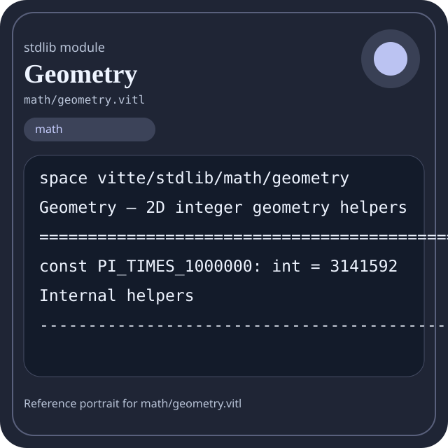

Stdlib module math/geometry.vitl
This page is a wiki-style reference for one concrete stdlib file. It explains what the file owns, where it fits in the family, and how to decide whether this is the right surface to depend on.

math/geometry.vitl.Family: math
Kind: public stdlib surface
Page style: this reference follows the same “encyclopedic card + portrait + usage contract” logic as the keyword pages, but for stdlib modules.
Summary
- Overview
- Purpose
- Taxonomy
- Implementation profile
- Top-level API inventory
- Position in family
- Declaration map
- Representative signatures
- How to use this module
- User example
- Keyword coverage
- Source shape
- Source landmarks
- Source organization
- Complete API catalog
- Integration boundaries
- Composition guidance
- Relationship table
- Neighbor modules
Overview
| Field | Value |
|---|---|
| Path | math/geometry.vitl |
| Family | math |
| Kind | public stdlib surface |
| Line count | 618 |
| Declared procedures | 72 |
| Declared forms/picks | 0 |
`math/geometry.vitl` is a public stdlib surface inside the `math` family. It should be read as one focused slice of the broader family responsibility: Arithmetic, algebra, comparison, calculus, geometry, modular arithmetic, number theory, probability, statistics, matrix, and vector helpers.
Purpose
This file should be chosen because of responsibility, not because its name “sounds close enough”. Inside the math family, it carries one focused part of the contract and keeps that responsibility separate from neighboring concerns.
- A scoring engine can compute aggregates in `math` while keeping I/O and transport elsewhere.
- A statistics or matrix chapter should explain the workflow around the computation, not just a single formula.
Taxonomy
Think of this page as a generated encyclopedia entry rather than a hand-written tutorial. The goal is to show what kind of module this is, how dense it is, and what reading strategy makes sense before depending on it.
- Large algorithm surface: this file exposes many procedures and likely acts as a domain toolkit rather than a single thin wrapper.
- Has tuning constants: part of the module behavior is controlled by named constants that document default precision, limits, or policy.
- Minimal top-level dependencies: the module reads as mostly self-contained from its opening declarations.
- Explicit export surface: the file ends with visible export declarations instead of relying only on implicit namespace discovery.
Implementation profile
This profile is inferred directly from the source text. It does not replace reading the file, but it tells you quickly whether the module is mostly declarative, loop-heavy, branch-heavy, or organized around many small exits.
| Signal | Count | What it suggests |
|---|---|---|
if | 49 | Branching density and local decision-making. |
while | 1 | Loop-heavy or iterative implementation style. |
for | 0 | Collection-style traversal at source level. |
match | 0 | Variant-driven branching or grammar-style decoding. |
let | 61 | Local state and intermediate value density. |
give | 120 | Number of explicit exit points and result shaping. |
Top-level API inventory
| Surface | Items |
|---|---|
| Procedures | abs_int, min_int, max_int, clamp_int, sign_int, sqrt_floor, point2, vec2, point2_zero, point2_is_valid, point2_x, point2_y |
| Forms | none declared at top level |
| Picks | none declared at top level |
| Constants | PI_TIMES_1000000 |
| Exports | * |
Imported surfaces
This file does not advertise a top-level `use` surface in its opening declarations. That often means it is either self-contained or an aggregation layer.
Position in family
This file is module 8 of 21 in the math family when ordered by path. By procedure count it ranks 5, and by line count it ranks 9. Those ranks are useful as rough signals of breadth, not as quality judgments.
Declaration map
The declaration map turns raw source into a scan-friendly catalog. It is useful when the file is large enough that a reader wants to orient by kinds of surfaces first.
| Line | Name | Kind | Role |
|---|---|---|---|
| 1 | vitte/stdlib/math/geometry | space | Declares the namespace that anchors this file in the stdlib tree. |
| 7 | PI_TIMES_1000000 | const | Defines a named constant reused across the module. |
| 13 | abs_int | proc | Represents one top-level surface in the file contract and should be read as part of the module boundary. |
| 21 | min_int | proc | Represents one top-level surface in the file contract and should be read as part of the module boundary. |
| 29 | max_int | proc | Represents one top-level surface in the file contract and should be read as part of the module boundary. |
| 37 | clamp_int | proc | Represents one top-level surface in the file contract and should be read as part of the module boundary. |
| 49 | sign_int | proc | Implements a security-sensitive transformation in the crypto boundary. |
| 61 | sqrt_floor | proc | Represents one top-level surface in the file contract and should be read as part of the module boundary. |
| 89 | point2 | proc | Represents one top-level surface in the file contract and should be read as part of the module boundary. |
| 93 | vec2 | proc | Represents one top-level surface in the file contract and should be read as part of the module boundary. |
| 97 | point2_zero | proc | Represents one top-level surface in the file contract and should be read as part of the module boundary. |
| 101 | point2_is_valid | proc | Represents one top-level surface in the file contract and should be read as part of the module boundary. |
| 105 | point2_x | proc | Represents one top-level surface in the file contract and should be read as part of the module boundary. |
| 113 | point2_y | proc | Represents one top-level surface in the file contract and should be read as part of the module boundary. |
| 121 | vec2_add | proc | Represents one top-level surface in the file contract and should be read as part of the module boundary. |
| 129 | vec2_sub | proc | Represents one top-level surface in the file contract and should be read as part of the module boundary. |
| 137 | vec2_neg | proc | Represents one top-level surface in the file contract and should be read as part of the module boundary. |
| 145 | vec2_scale | proc | Represents one top-level surface in the file contract and should be read as part of the module boundary. |
| 153 | vec2_equal | proc | Represents one top-level surface in the file contract and should be read as part of the module boundary. |
| 161 | vec2_dot | proc | Represents one top-level surface in the file contract and should be read as part of the module boundary. |
| 169 | vec2_cross | proc | Represents one top-level surface in the file contract and should be read as part of the module boundary. |
| 177 | vec2_length_sq | proc | Represents one top-level surface in the file contract and should be read as part of the module boundary. |
| 185 | vec2_manhattan | proc | Represents one top-level surface in the file contract and should be read as part of the module boundary. |
| 193 | vec2_chebyshev | proc | Represents one top-level surface in the file contract and should be read as part of the module boundary. |
| 201 | vec2_perp_left | proc | Represents one top-level surface in the file contract and should be read as part of the module boundary. |
| 209 | vec2_perp_right | proc | Represents one top-level surface in the file contract and should be read as part of the module boundary. |
| 217 | midpoint | proc | Represents one top-level surface in the file contract and should be read as part of the module boundary. |
| 225 | midpoint_points | proc | Represents one top-level surface in the file contract and should be read as part of the module boundary. |
| 237 | rect_area | proc | Represents one top-level surface in the file contract and should be read as part of the module boundary. |
| 245 | rect_perimeter | proc | Represents one top-level surface in the file contract and should be read as part of the module boundary. |
| 254 | rect_is_valid | proc | Represents one top-level surface in the file contract and should be read as part of the module boundary. |
| 258 | rect_contains | proc | Represents one top-level surface in the file contract and should be read as part of the module boundary. |
| 266 | rect_intersects | proc | Represents one top-level surface in the file contract and should be read as part of the module boundary. |
| 290 | rect_intersection_area | proc | Represents one top-level surface in the file contract and should be read as part of the module boundary. |
| 309 | rect_union_area | proc | Represents one top-level surface in the file contract and should be read as part of the module boundary. |
| 321 | triangle_area2 | proc | Represents one top-level surface in the file contract and should be read as part of the module boundary. |
| 329 | triangle_area | proc | Represents one top-level surface in the file contract and should be read as part of the module boundary. |
| 337 | triangle_area2_points | proc | Represents one top-level surface in the file contract and should be read as part of the module boundary. |
| 346 | triangle_area_points | proc | Represents one top-level surface in the file contract and should be read as part of the module boundary. |
| 352 | triangle_perimeter_manhattan | proc | Represents one top-level surface in the file contract and should be read as part of the module boundary. |
| 363 | distance_sq | proc | Represents one top-level surface in the file contract and should be read as part of the module boundary. |
| 370 | distance | proc | Represents one top-level surface in the file contract and should be read as part of the module boundary. |
| 374 | manhattan_distance | proc | Represents one top-level surface in the file contract and should be read as part of the module boundary. |
| 383 | chebyshev_distance | proc | Represents one top-level surface in the file contract and should be read as part of the module boundary. |
| 392 | norm1 | proc | Represents one top-level surface in the file contract and should be read as part of the module boundary. |
| 398 | norm2_sq | proc | Represents one top-level surface in the file contract and should be read as part of the module boundary. |
| 402 | norm2 | proc | Represents one top-level surface in the file contract and should be read as part of the module boundary. |
| 406 | norm_inf | proc | Represents one top-level surface in the file contract and should be read as part of the module boundary. |
| 412 | point_to_origin_distance_sq | proc | Represents one top-level surface in the file contract and should be read as part of the module boundary. |
| 416 | point_to_origin_distance | proc | Represents one top-level surface in the file contract and should be read as part of the module boundary. |
| 424 | cross2 | proc | Represents one top-level surface in the file contract and should be read as part of the module boundary. |
| 428 | dot2 | proc | Represents one top-level surface in the file contract and should be read as part of the module boundary. |
| 432 | orientation | proc | Represents one top-level surface in the file contract and should be read as part of the module boundary. |
| 443 | collinear | proc | Represents one top-level surface in the file contract and should be read as part of the module boundary. |
| 447 | left_turn | proc | Represents one top-level surface in the file contract and should be read as part of the module boundary. |
| 451 | right_turn | proc | Represents one top-level surface in the file contract and should be read as part of the module boundary. |
| 459 | on_segment | proc | Represents one top-level surface in the file contract and should be read as part of the module boundary. |
| 467 | segments_intersect | proc | Represents one top-level surface in the file contract and should be read as part of the module boundary. |
| 496 | segment_length_sq | proc | Represents one top-level surface in the file contract and should be read as part of the module boundary. |
| 500 | segment_length | proc | Represents one top-level surface in the file contract and should be read as part of the module boundary. |
| 508 | circle_area_times_1000000 | proc | Represents one top-level surface in the file contract and should be read as part of the module boundary. |
| 516 | circle_perimeter_times_1000000 | proc | Represents one top-level surface in the file contract and should be read as part of the module boundary. |
| 524 | point_in_circle | proc | Represents one top-level surface in the file contract and should be read as part of the module boundary. |
| 536 | bbox2 | proc | Represents one top-level surface in the file contract and should be read as part of the module boundary. |
| 545 | bbox_contains | proc | Represents one top-level surface in the file contract and should be read as part of the module boundary. |
| 553 | bbox_width | proc | Represents one top-level surface in the file contract and should be read as part of the module boundary. |
| 561 | bbox_height | proc | Represents one top-level surface in the file contract and should be read as part of the module boundary. |
| 569 | bbox_area | proc | Represents one top-level surface in the file contract and should be read as part of the module boundary. |
| 581 | l1_distance | proc | Represents one top-level surface in the file contract and should be read as part of the module boundary. |
| 585 | l2_distance_sq | proc | Represents one top-level surface in the file contract and should be read as part of the module boundary. |
| 589 | linf_distance | proc | Represents one top-level surface in the file contract and should be read as part of the module boundary. |
| 593 | geometry_version | proc | Represents one top-level surface in the file contract and should be read as part of the module boundary. |
| 597 | geometry_ready | proc | Represents one top-level surface in the file contract and should be read as part of the module boundary. |
| 601 | geometry_selftest | proc | Represents one top-level surface in the file contract and should be read as part of the module boundary. |
The table is exhaustive for top-level declarations of the selected kinds. This file declares 74 matching surfaces.
Representative signatures
These signatures are shown in source order so the page keeps the feel of a reference manual, not just a keyword cloud.
const PI_TIMES_1000000: int = 3141592(line 7)proc abs_int(value: int) -> int {(line 13)proc min_int(a: int, b: int) -> int {(line 21)proc max_int(a: int, b: int) -> int {(line 29)proc clamp_int(value: int, low: int, high: int) -> int {(line 37)proc sign_int(value: int) -> int {(line 49)proc sqrt_floor(value: int) -> int {(line 61)proc point2(x: int, y: int) -> [int] {(line 89)proc vec2(x: int, y: int) -> [int] {(line 93)proc point2_zero() -> [int] {(line 97)proc point2_is_valid(p: [int]) -> bool {(line 101)proc point2_x(p: [int]) -> int {(line 105)proc point2_y(p: [int]) -> int {(line 113)proc vec2_add(a: [int], b: [int]) -> [int] {(line 121)proc vec2_sub(a: [int], b: [int]) -> [int] {(line 129)proc vec2_neg(v: [int]) -> [int] {(line 137)proc vec2_scale(v: [int], k: int) -> [int] {(line 145)proc vec2_equal(a: [int], b: [int]) -> bool {(line 153)
The list is intentionally capped here; the source file declares 73 matching signatures in total.
How to use this module
Start by reading the file as an ownership boundary. Ask three questions: what enters this module, what stable types or procedures it exports, and what adjacent module should stay outside of it.
- Read
spaceand top-level imports first so the ownership boundary ofmath/geometry.vitlis explicit. - Scan constants before procedures; they often encode precision, limits, or policy assumptions that explain later behavior.
- Traverse procedures in source order; the early helpers usually explain the naming and numeric conventions used later.
- Use the source landmarks section below as a table of contents when the file is large.
- Only after that compare neighbor modules, because the right boundary choice matters more than memorizing one helper name.
User example
This example is generated from the actual stdlib module surface. Its job is not to be the smallest snippet possible; its job is to show a realistic consumer-shaped file that exercises the module and mirrors the language keywords the module itself relies on.
space demo/math_geometry
const SAMPLE_LABEL: string = "demo"
proc run_example() -> string {
let entries = point2(1, 1)
let ready: bool = point2_is_valid([1, 2, 3])
let failed: bool = false
let stable: bool = ready and true
let fallback: bool = ready or false
let idx: int = 0
let count: int = 0
while idx < entries.len {
set count = count + 1
set idx = idx + 1
}
if not ready {
give "not-ready"
} else {
give "ok"
}
}
export run_exampleKeyword coverage
This table makes the “all keywords of the module” requirement auditable. It compares the detected Vitte keywords in the source file with the generated consumer example above.
| Keyword | Present in module source | Used in generated user example |
|---|---|---|
space | yes | yes |
const | yes | yes |
proc | yes | yes |
let | yes | yes |
set | yes | yes |
if | yes | yes |
else | yes | yes |
while | yes | yes |
give | yes | yes |
export | yes | yes |
true | yes | yes |
false | yes | yes |
and | yes | yes |
or | yes | yes |
not | yes | yes |
The generated snippet exercises every detected Vitte keyword used by this module.
Source shape
space vitte/stdlib/math/geometry
const PI_TIMES_1000000: int = 3141592
proc abs_int(value: int) -> int {
if value < 0 {
give 0 - value
} else {
give value
}
}
proc min_int(a: int, b: int) -> int {The excerpt is not meant to replace the file. It exists to make the module recognizable at first glance, the same way a Wikipedia infobox helps the reader orient before reading the whole article.
Source landmarks
Large files are easier to retain when they have visible landmarks. When the source contains explicit section banners, they are surfaced here; otherwise the first major declarations are used as anchors.
- Geometry — 2D integer geometry helpers
- Internal helpers
- Points / vectors
- Rectangles
- Triangles
- Distances and norms
- Orientation / products
- Segments
- Circles
- Bounding boxes
Source organization
When a file carries its own internal chaptering, those chapters usually reveal the intended reading order better than a flat symbol list. This section reconstructs that organization from the source itself.
Opening declarations
Top-level items: 1. Procedures: 0. Data surfaces: 0. Constants: 0.
First visible names: vitte/stdlib/math/geometry
Geometry — 2D integer geometry helpers
Top-level items: 1. Procedures: 0. Data surfaces: 0. Constants: 1.
First visible names: PI_TIMES_1000000
Internal helpers
Top-level items: 6. Procedures: 6. Data surfaces: 0. Constants: 0.
First visible names: abs_int, min_int, max_int, clamp_int, sign_int, sqrt_floor
Points / vectors
Top-level items: 20. Procedures: 20. Data surfaces: 0. Constants: 0.
First visible names: point2, vec2, point2_zero, point2_is_valid, point2_x, point2_y, vec2_add, vec2_sub, vec2_neg, vec2_scale
Rectangles
Top-level items: 7. Procedures: 7. Data surfaces: 0. Constants: 0.
First visible names: rect_area, rect_perimeter, rect_is_valid, rect_contains, rect_intersects, rect_intersection_area, rect_union_area
Triangles
Top-level items: 5. Procedures: 5. Data surfaces: 0. Constants: 0.
First visible names: triangle_area2, triangle_area, triangle_area2_points, triangle_area_points, triangle_perimeter_manhattan
Distances and norms
Top-level items: 10. Procedures: 10. Data surfaces: 0. Constants: 0.
First visible names: distance_sq, distance, manhattan_distance, chebyshev_distance, norm1, norm2_sq, norm2, norm_inf, point_to_origin_distance_sq, point_to_origin_distance
Orientation / products
Top-level items: 6. Procedures: 6. Data surfaces: 0. Constants: 0.
First visible names: cross2, dot2, orientation, collinear, left_turn, right_turn
Segments
Top-level items: 4. Procedures: 4. Data surfaces: 0. Constants: 0.
First visible names: on_segment, segments_intersect, segment_length_sq, segment_length
Circles
Top-level items: 3. Procedures: 3. Data surfaces: 0. Constants: 0.
First visible names: circle_area_times_1000000, circle_perimeter_times_1000000, point_in_circle
Bounding boxes
Top-level items: 5. Procedures: 5. Data surfaces: 0. Constants: 0.
First visible names: bbox2, bbox_contains, bbox_width, bbox_height, bbox_area
Aliases
Top-level items: 7. Procedures: 6. Data surfaces: 0. Constants: 0.
First visible names: l1_distance, l2_distance_sq, linf_distance, geometry_version, geometry_ready, geometry_selftest, *
Complete API catalog
This catalog is the exhaustive file-level index for the module. It is intentionally closer to a generated encyclopedia appendix than to a tutorial summary.
Constants
| Line | Name | Signature | Role |
|---|---|---|---|
| 7 | PI_TIMES_1000000 | const PI_TIMES_1000000: int = 3141592 | Defines a named constant reused across the module. |
Procedures
| Line | Name | Signature | Role |
|---|---|---|---|
| 13 | abs_int | proc abs_int(value: int) -> int { | Represents one top-level surface in the file contract and should be read as part of the module boundary. |
| 21 | min_int | proc min_int(a: int, b: int) -> int { | Represents one top-level surface in the file contract and should be read as part of the module boundary. |
| 29 | max_int | proc max_int(a: int, b: int) -> int { | Represents one top-level surface in the file contract and should be read as part of the module boundary. |
| 37 | clamp_int | proc clamp_int(value: int, low: int, high: int) -> int { | Represents one top-level surface in the file contract and should be read as part of the module boundary. |
| 49 | sign_int | proc sign_int(value: int) -> int { | Implements a security-sensitive transformation in the crypto boundary. |
| 61 | sqrt_floor | proc sqrt_floor(value: int) -> int { | Represents one top-level surface in the file contract and should be read as part of the module boundary. |
| 89 | point2 | proc point2(x: int, y: int) -> [int] { | Represents one top-level surface in the file contract and should be read as part of the module boundary. |
| 93 | vec2 | proc vec2(x: int, y: int) -> [int] { | Represents one top-level surface in the file contract and should be read as part of the module boundary. |
| 97 | point2_zero | proc point2_zero() -> [int] { | Represents one top-level surface in the file contract and should be read as part of the module boundary. |
| 101 | point2_is_valid | proc point2_is_valid(p: [int]) -> bool { | Represents one top-level surface in the file contract and should be read as part of the module boundary. |
| 105 | point2_x | proc point2_x(p: [int]) -> int { | Represents one top-level surface in the file contract and should be read as part of the module boundary. |
| 113 | point2_y | proc point2_y(p: [int]) -> int { | Represents one top-level surface in the file contract and should be read as part of the module boundary. |
| 121 | vec2_add | proc vec2_add(a: [int], b: [int]) -> [int] { | Represents one top-level surface in the file contract and should be read as part of the module boundary. |
| 129 | vec2_sub | proc vec2_sub(a: [int], b: [int]) -> [int] { | Represents one top-level surface in the file contract and should be read as part of the module boundary. |
| 137 | vec2_neg | proc vec2_neg(v: [int]) -> [int] { | Represents one top-level surface in the file contract and should be read as part of the module boundary. |
| 145 | vec2_scale | proc vec2_scale(v: [int], k: int) -> [int] { | Represents one top-level surface in the file contract and should be read as part of the module boundary. |
| 153 | vec2_equal | proc vec2_equal(a: [int], b: [int]) -> bool { | Represents one top-level surface in the file contract and should be read as part of the module boundary. |
| 161 | vec2_dot | proc vec2_dot(a: [int], b: [int]) -> int { | Represents one top-level surface in the file contract and should be read as part of the module boundary. |
| 169 | vec2_cross | proc vec2_cross(a: [int], b: [int]) -> int { | Represents one top-level surface in the file contract and should be read as part of the module boundary. |
| 177 | vec2_length_sq | proc vec2_length_sq(v: [int]) -> int { | Represents one top-level surface in the file contract and should be read as part of the module boundary. |
| 185 | vec2_manhattan | proc vec2_manhattan(v: [int]) -> int { | Represents one top-level surface in the file contract and should be read as part of the module boundary. |
| 193 | vec2_chebyshev | proc vec2_chebyshev(v: [int]) -> int { | Represents one top-level surface in the file contract and should be read as part of the module boundary. |
| 201 | vec2_perp_left | proc vec2_perp_left(v: [int]) -> [int] { | Represents one top-level surface in the file contract and should be read as part of the module boundary. |
| 209 | vec2_perp_right | proc vec2_perp_right(v: [int]) -> [int] { | Represents one top-level surface in the file contract and should be read as part of the module boundary. |
| 217 | midpoint | proc midpoint(ax: int, ay: int, bx: int, by: int) -> [int] { | Represents one top-level surface in the file contract and should be read as part of the module boundary. |
| 225 | midpoint_points | proc midpoint_points(a: [int], b: [int]) -> [int] { | Represents one top-level surface in the file contract and should be read as part of the module boundary. |
| 237 | rect_area | proc rect_area(width: int, height: int) -> int { | Represents one top-level surface in the file contract and should be read as part of the module boundary. |
| 245 | rect_perimeter | proc rect_perimeter(width: int, height: int) -> int { | Represents one top-level surface in the file contract and should be read as part of the module boundary. |
| 254 | rect_is_valid | proc rect_is_valid(width: int, height: int) -> bool { | Represents one top-level surface in the file contract and should be read as part of the module boundary. |
| 258 | rect_contains | proc rect_contains(px: int, py: int, x: int, y: int, width: int, height: int) -> bool { | Represents one top-level surface in the file contract and should be read as part of the module boundary. |
| 266 | rect_intersects | proc rect_intersects(ax: int, ay: int, aw: int, ah: int, bx: int, by: int, bw: int, bh: int) -> bool { | Represents one top-level surface in the file contract and should be read as part of the module boundary. |
| 290 | rect_intersection_area | proc rect_intersection_area(ax: int, ay: int, aw: int, ah: int, bx: int, by: int, bw: int, bh: int) -> int { | Represents one top-level surface in the file contract and should be read as part of the module boundary. |
| 309 | rect_union_area | proc rect_union_area(ax: int, ay: int, aw: int, ah: int, bx: int, by: int, bw: int, bh: int) -> int { | Represents one top-level surface in the file contract and should be read as part of the module boundary. |
| 321 | triangle_area2 | proc triangle_area2(base: int, height: int) -> int { | Represents one top-level surface in the file contract and should be read as part of the module boundary. |
| 329 | triangle_area | proc triangle_area(base: int, height: int) -> int { | Represents one top-level surface in the file contract and should be read as part of the module boundary. |
| 337 | triangle_area2_points | proc triangle_area2_points(ax: int, ay: int, bx: int, by: int, cx: int, cy: int) -> int { | Represents one top-level surface in the file contract and should be read as part of the module boundary. |
| 346 | triangle_area_points | proc triangle_area_points(ax: int, ay: int, bx: int, by: int, cx: int, cy: int) -> int { | Represents one top-level surface in the file contract and should be read as part of the module boundary. |
| 352 | triangle_perimeter_manhattan | proc triangle_perimeter_manhattan(ax: int, ay: int, bx: int, by: int, cx: int, cy: int) -> int { | Represents one top-level surface in the file contract and should be read as part of the module boundary. |
| 363 | distance_sq | proc distance_sq(ax: int, ay: int, bx: int, by: int) -> int { | Represents one top-level surface in the file contract and should be read as part of the module boundary. |
| 370 | distance | proc distance(ax: int, ay: int, bx: int, by: int) -> int { | Represents one top-level surface in the file contract and should be read as part of the module boundary. |
| 374 | manhattan_distance | proc manhattan_distance(ax: int, ay: int, bx: int, by: int) -> int { | Represents one top-level surface in the file contract and should be read as part of the module boundary. |
| 383 | chebyshev_distance | proc chebyshev_distance(ax: int, ay: int, bx: int, by: int) -> int { | Represents one top-level surface in the file contract and should be read as part of the module boundary. |
| 392 | norm1 | proc norm1(x: int, y: int) -> int { | Represents one top-level surface in the file contract and should be read as part of the module boundary. |
| 398 | norm2_sq | proc norm2_sq(x: int, y: int) -> int { | Represents one top-level surface in the file contract and should be read as part of the module boundary. |
| 402 | norm2 | proc norm2(x: int, y: int) -> int { | Represents one top-level surface in the file contract and should be read as part of the module boundary. |
| 406 | norm_inf | proc norm_inf(x: int, y: int) -> int { | Represents one top-level surface in the file contract and should be read as part of the module boundary. |
| 412 | point_to_origin_distance_sq | proc point_to_origin_distance_sq(x: int, y: int) -> int { | Represents one top-level surface in the file contract and should be read as part of the module boundary. |
| 416 | point_to_origin_distance | proc point_to_origin_distance(x: int, y: int) -> int { | Represents one top-level surface in the file contract and should be read as part of the module boundary. |
| 424 | cross2 | proc cross2(ax: int, ay: int, bx: int, by: int) -> int { | Represents one top-level surface in the file contract and should be read as part of the module boundary. |
| 428 | dot2 | proc dot2(ax: int, ay: int, bx: int, by: int) -> int { | Represents one top-level surface in the file contract and should be read as part of the module boundary. |
| 432 | orientation | proc orientation(ax: int, ay: int, bx: int, by: int, cx: int, cy: int) -> int { | Represents one top-level surface in the file contract and should be read as part of the module boundary. |
| 443 | collinear | proc collinear(ax: int, ay: int, bx: int, by: int, cx: int, cy: int) -> bool { | Represents one top-level surface in the file contract and should be read as part of the module boundary. |
| 447 | left_turn | proc left_turn(ax: int, ay: int, bx: int, by: int, cx: int, cy: int) -> bool { | Represents one top-level surface in the file contract and should be read as part of the module boundary. |
| 451 | right_turn | proc right_turn(ax: int, ay: int, bx: int, by: int, cx: int, cy: int) -> bool { | Represents one top-level surface in the file contract and should be read as part of the module boundary. |
| 459 | on_segment | proc on_segment(ax: int, ay: int, bx: int, by: int, px: int, py: int) -> bool { | Represents one top-level surface in the file contract and should be read as part of the module boundary. |
| 467 | segments_intersect | proc segments_intersect(ax: int, ay: int, bx: int, by: int, cx: int, cy: int, dx: int, dy: int) -> bool { | Represents one top-level surface in the file contract and should be read as part of the module boundary. |
| 496 | segment_length_sq | proc segment_length_sq(ax: int, ay: int, bx: int, by: int) -> int { | Represents one top-level surface in the file contract and should be read as part of the module boundary. |
| 500 | segment_length | proc segment_length(ax: int, ay: int, bx: int, by: int) -> int { | Represents one top-level surface in the file contract and should be read as part of the module boundary. |
| 508 | circle_area_times_1000000 | proc circle_area_times_1000000(radius: int) -> int { | Represents one top-level surface in the file contract and should be read as part of the module boundary. |
| 516 | circle_perimeter_times_1000000 | proc circle_perimeter_times_1000000(radius: int) -> int { | Represents one top-level surface in the file contract and should be read as part of the module boundary. |
| 524 | point_in_circle | proc point_in_circle(px: int, py: int, cx: int, cy: int, radius: int) -> bool { | Represents one top-level surface in the file contract and should be read as part of the module boundary. |
| 536 | bbox2 | proc bbox2(ax: int, ay: int, bx: int, by: int) -> [int] { | Represents one top-level surface in the file contract and should be read as part of the module boundary. |
| 545 | bbox_contains | proc bbox_contains(box: [int], px: int, py: int) -> bool { | Represents one top-level surface in the file contract and should be read as part of the module boundary. |
| 553 | bbox_width | proc bbox_width(box: [int]) -> int { | Represents one top-level surface in the file contract and should be read as part of the module boundary. |
| 561 | bbox_height | proc bbox_height(box: [int]) -> int { | Represents one top-level surface in the file contract and should be read as part of the module boundary. |
| 569 | bbox_area | proc bbox_area(box: [int]) -> int { | Represents one top-level surface in the file contract and should be read as part of the module boundary. |
| 581 | l1_distance | proc l1_distance(ax: int, ay: int, bx: int, by: int) -> int { | Represents one top-level surface in the file contract and should be read as part of the module boundary. |
| 585 | l2_distance_sq | proc l2_distance_sq(ax: int, ay: int, bx: int, by: int) -> int { | Represents one top-level surface in the file contract and should be read as part of the module boundary. |
| 589 | linf_distance | proc linf_distance(ax: int, ay: int, bx: int, by: int) -> int { | Represents one top-level surface in the file contract and should be read as part of the module boundary. |
| 593 | geometry_version | proc geometry_version() -> string { | Represents one top-level surface in the file contract and should be read as part of the module boundary. |
| 597 | geometry_ready | proc geometry_ready() -> bool { | Represents one top-level surface in the file contract and should be read as part of the module boundary. |
| 601 | geometry_selftest | proc geometry_selftest() -> bool { | Represents one top-level surface in the file contract and should be read as part of the module boundary. |
Exports
| Line | Name | Signature | Role |
|---|---|---|---|
| 618 | * | export * | Re-exports surfaces that the module wants to expose as part of its public boundary. |
Integration boundaries
Within math, this file should remain focused. If a future helper changes the host boundary, scheduling boundary, or data-shape boundary, it probably belongs in a neighbor module instead of being added here by convenience.
- Family responsibility: Arithmetic, algebra, comparison, calculus, geometry, modular arithmetic, number theory, probability, statistics, matrix, and vector helpers.
- Family architecture role: Use `math` when the transformation itself is the feature. This family exists so algorithmic intent stays visible and testable.
Composition guidance
Choose this module when
- Choose
math/geometry.vitlwhen the main question is owned by this module rather than by transport, storage, orchestration, or user-interface code. - A scoring engine can compute aggregates in `math` while keeping I/O and transport elsewhere.
- A statistics or matrix chapter should explain the workflow around the computation, not just a single formula.
Pause before extending it when
- Avoid extending this file when the new helper mostly changes the boundary to host I/O, runtime coordination, or foreign integration instead of staying inside
math. - Check nearby modules such as
math/algebra.vitl,math/arithmetic.vitl,math/arrays.vitlbefore adding convenience wrappers here.
Relationship table
This table keeps the page closer to a real encyclopedia entry: a module is easier to understand when compared with its nearest alternatives in the same family.
| Neighbor | Procedures | Data surfaces | Why compare it |
|---|---|---|---|
math/algebra.vitl | 14 | 0 | Shares the same family boundary but carries a distinct slice of responsibility. |
math/arithmetic.vitl | 72 | 2 | Shares the same family boundary but carries a distinct slice of responsibility. |
math/arrays.vitl | 83 | 2 | Shares the same family boundary but carries a distinct slice of responsibility. |
math/calculus.vitl | 56 | 3 | Shares the same family boundary but carries a distinct slice of responsibility. |
math/comparison.vitl | 47 | 0 | Shares the same family boundary but carries a distinct slice of responsibility. |
math/complex.vitl | 49 | 0 | Shares the same family boundary but carries a distinct slice of responsibility. |
math/logic.vitl | 20 | 0 | Shares the same family boundary but carries a distinct slice of responsibility. |
math/matrix.vitl | 53 | 0 | Shares the same family boundary but carries a distinct slice of responsibility. |